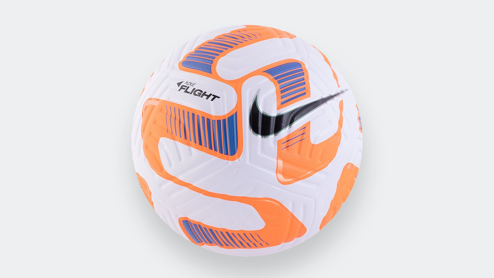

Home
About Us
Contact
Balls

Description
The standard soccer ball is made of synthetic leather, usually polyurethane or polyvinyl chloride, stitched around and inflated rubber or rubber-like bladder
Name of the product
The price of the product
Stock availability
Weight
soccer balls
R250.00
300
410 to 450 grams
Buy Now